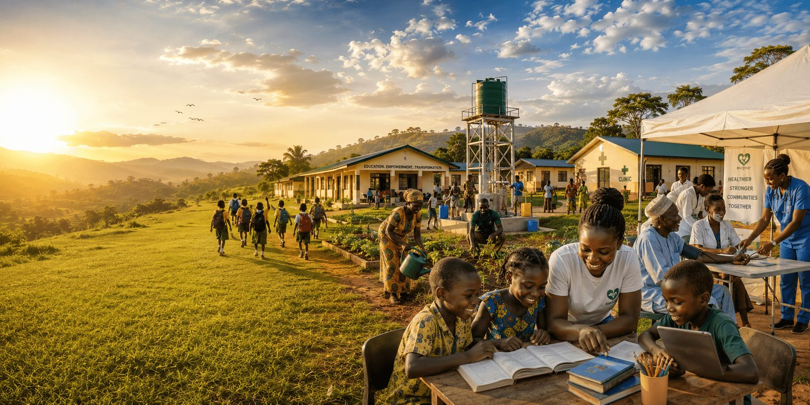

About The GoodLife For All Foundation
Building stronger communities through sustainable development, compassionate service, strategic partnerships and transformative leadership.

Who We Are
A Foundation Built On Opportunity For All
GoodLife For All Foundation (GLAF) is a nonprofit organization dedicated to improving lives through community empowerment, humanitarian support, civic advocacy, youth development, and sustainable social impact initiatives. We believe that every individual deserves access to opportunity, dignity, support systems, and a better quality of life, regardless of social or economic background.
GLAF was founded in Abuja, and today maintains an active presence in Port Harcourt, where our founder's vision for community empowerment across Rivers State first took shape. From this foundation, we continue to grow deliberately — extending our reach across Nigeria with an eye toward global partnership and impact.
"Empowering Citizens, Transforming Communities."
Our Vision
To build empowered, inclusive, and thriving communities where every citizen has the opportunity to live a dignified and meaningful life.
Our Mission
To promote sustainable community development through empowerment programs, humanitarian support, civic enlightenment, advocacy, and strategic partnerships that improve lives and create lasting social impact.
Our Core Values
The Principles That Guide Every Decision
Integrity
Compassion
Empowerment
Partnership
Community Development
Inclusiveness
What Makes Us Different
Why Communities Trust GLAF
Community First
Every program starts with listening, not assuming.
Long-Term Impact
We design for outcomes years after we leave.
Transparency
Independent audits and open reporting.
Strong Partnerships
Government, corporate and grassroots alliances.
Evidence-Based Solutions
Programs shaped by data and field research.
Sustainable Development
Built for community ownership from day one.
Our Leadership
The Team Behind GLAF
Experienced professionals who combine technical expertise with a shared commitment to community impact.
Freeman Francis Ezinwo
Founder / Executive Director
Leads GLAF's overall vision and strategic direction.
Dr. Adaoma Prisca Ezinwo
Programme & Operations Director
Oversees the design and delivery of all GLAF programmes.
Chukwuemeka Veronica Chinazo
Finance & Compliance Officer
Ensures financial integrity and regulatory compliance.
Laurina Osigwe
Monitoring, Evaluation & Learning (MEL) Officer
Tracks programme impact and drives evidence-based improvement.
Cynthia Onyinyechi Nwankwo
Communications & Membership Manager
Tells GLAF's story and grows our member community.
Governance & Accountability
Structured For Integrity
GLAF operates under an independent Board of Trustees, with annual external audits, published financial statements, and a dedicated Monitoring & Evaluation unit tracking every project from design to completion.
Board Oversight
Audited Finances
Project Monitoring
Ethical Governance
Our Journey
Milestones Along The Way
2026 — Foundation Established
GLAF is founded in Abuja, with an active presence established in Port Harcourt to advance our founder's vision for community empowerment across Rivers State.
Flagship Health Programme Launched
Launch of the Safe Motherhood Initiative (SMI), our flagship health programme, providing maternal health education and safe delivery support to vulnerable pregnant women.
Youth Empowerment Program
The Youth Empowerment & Skills Academy begins training its first cohort of young leaders.
Healthcare Outreach Expansion
The Community Health & Wellness Initiative expands medical outreach to communities across Rivers and Bayelsa States.
Environmental Initiative
The Clean Communities & Environmental Action Initiative plants its first 10,000 trees.
Strategic Partnerships
GLAF forms formal partnerships with corporate and international development partners.
Future Expansion
Plans underway to extend our programmes from Abuja and Port Harcourt to additional Nigerian states.
Our Impact Philosophy
Measuring What Matters
We measure impact through continuous monitoring, independent evaluation, and — most importantly — community ownership. A project isn't successful because it launched; it's successful when the community can sustain it without us.
Every program includes baseline assessment, mid-point review, and a post-project evaluation shared publicly in our annual Impact Report.